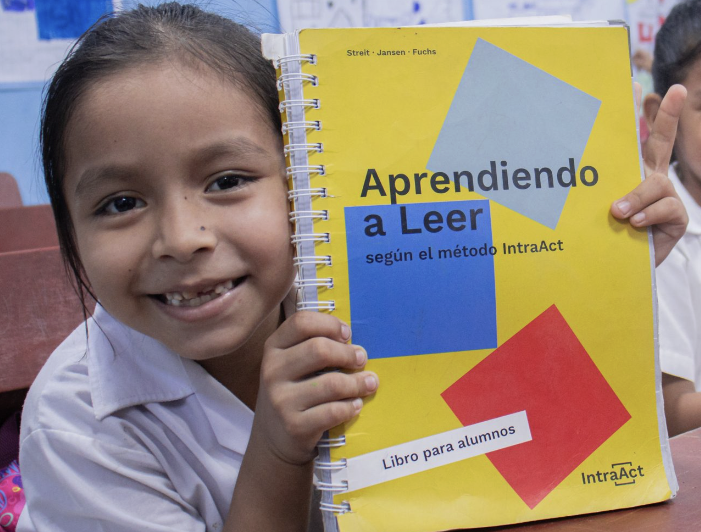
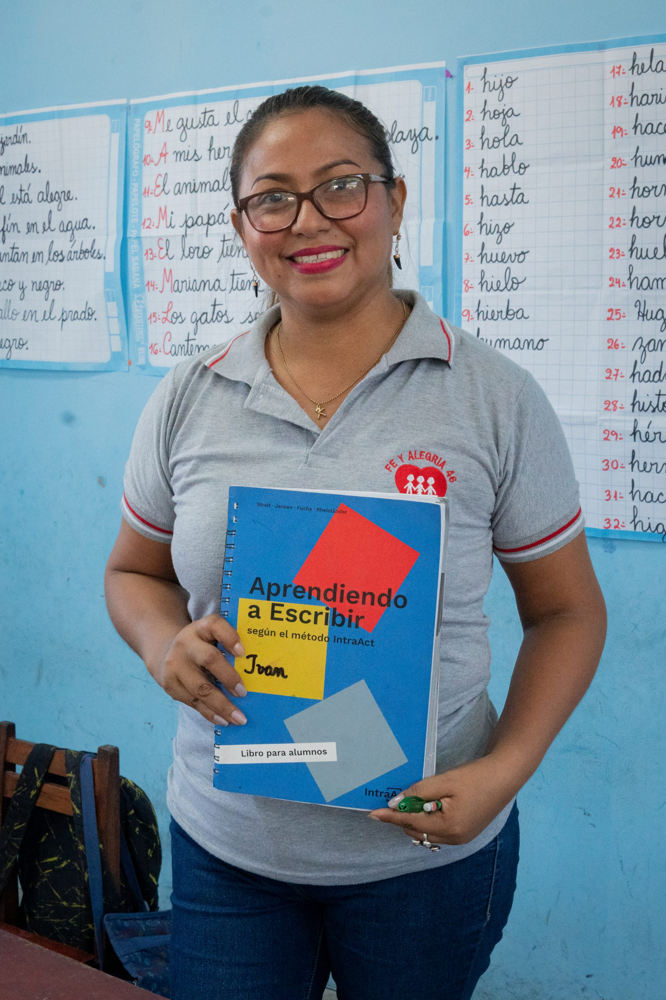

The IntraAct method is a structured literacy approach grounded in cognitive science that helps students develop decoding, fluency, and comprehension through systematic instruction and guided practice.
Students Reached
Read Within 4 Months
Teacher Recommendation
Reading is the foundation for all learning. Yet millions of children fall behind in early literacy due to gaps in decoding and reading fluency.
The IntraAct method provides teachers with a practical instructional framework that strengthens foundational reading skills and builds student confidence.
Explore the Method
The IntraAct method supports literacy development through proven, research-backed instructional strategies.
Structured phonics instruction that builds foundational reading skills step by step.
Teachers guide students through focused reading exercises that strengthen skills progressively.
Corrective feedback during instruction ensures students build accurate reading habits from the start.
Repeated practice and targeted activities build reading fluency and long-term comprehension.
Educators using the IntraAct method consistently report measurable improvements in reading development across diverse student populations.

With IntraAct, 80% of students read within 4 months — and by the end of the school year, 80% are fully literate. The structured approach gives teachers clarity and students confidence.
Primary School Implementation
The method is intuitive for teachers and transformative for students. The systematic approach to decoding and fluency building is exactly what our struggling readers needed.
District-Wide Program
Partner with IntraAct to bring evidence-based literacy instruction to your school or district.